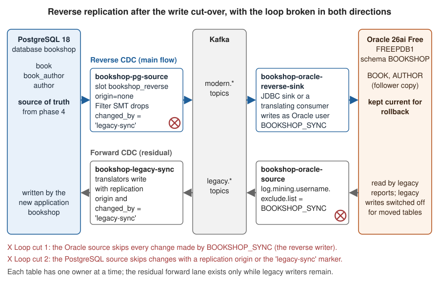

Cut-over, Reverse Replication and Rollback
|
This content was generated with the assistance of AI and should be verified against the official documentation before being relied on in production. |
Everything before the write cut-over is reversible at no cost: the legacy Oracle database is still the source of truth, and PostgreSQL is a copy that can be dropped and rebuilt. The write cut-over is the step at which the new application starts owning data, and the moment from which a mistake can corrupt the system of record. This page is the runbook for that step and for what follows it: reverse replication that keeps Oracle current so that a rollback stays possible and legacy reports keep working, the mechanisms that stop changes from looping between the two databases, conflicts, the point after which rollback is no longer realistic, and the decommissioning of the whole pipeline.
The phases and their exit criteria are defined on
Migration Patterns with CDC: phase 3 is the read cut-over,
phase 4 the write cut-over with reverse replication, phase 5 the decommission. The routing technique (a strangler proxy
with feature flags and cohorts) is described on
Migration Path: From a Legacy Stack to a Modern One,
together with the
exit criteria for decommissioning the legacy system.
This page adds the data side: what the connectors, slots and users do at each step. The running example is the
Bookshop catalogue (BOOK, AUTHOR), the first capability to move.
Checked on 2026-11-09 against Debezium 3.7.1.Final, Kafka 4.x in KRaft mode, Oracle AI Database 26ai Free (image gvenzl/oracle-free:23.26.3, PDB FREEPDB1),
PostgreSQL 18, Spring Boot 4.1 and Java 21. What was run: the Filter SMT condition on this page was executed with
the debezium-scripting 3.7.1.Final archive and Groovy 4.0.17 against hand-built change event records; the image
extension for Groovy was built from quay.io/debezium/connect:3.7.1.Final; the PostgreSQL replication-origin
mechanism (pgoutput with origin set to none, pg_replication_origin_session_setup granted to a non-superuser,
and a HikariCP pool with it as init SQL) was tested on PostgreSQL 18.6 with pg_logical_slot_peek_binary_changes; and
the Java configuration class was compiled with javac --release 21. The connector registrations, the Oracle SQL and
the runbook commands were derived from the official documentation listed under References and were not
run end to end.
The runbook at a glance
| Step | What changes | Rollback |
|---|---|---|
Read cut-over (phase 3) |
The strangler proxy sends reads of the capability to the new application, cohort by cohort. Writes stay on the legacy side, forward CDC keeps PostgreSQL current. |
Route reads back. Instant, nothing to repair. |
Preparation for the write cut-over |
Reverse pipeline created in a stopped state, PostgreSQL origin and roles prepared, write guard written, rollback rehearsed on a staging copy. |
Nothing to roll back. |
Write cut-over (phase 4 begins) |
Write freeze, drain, final reconciliation, forward capture reconfigured, reverse CDC started, writes routed to the new application. |
Route writes back to the legacy application after draining the reverse pipeline (see Rollback). |
Phase 4 steady state |
PostgreSQL is the source of truth for the catalogue; Oracle follows through reverse CDC. |
Possible until the point of no return. |
Decommission (phase 5) |
Connectors, slots, publications, users, supplemental logging and topics removed. |
Restore from the archive only. |
The read cut-over
Before any write moves, reads move. The proxy routes catalogue searches and book pages to the new application for an internal cohort, then for a growing share of users, while the legacy application keeps taking all writes. The data side of this step is small, but it sets three preconditions for the write cut-over:
-
The end-to-end lag objective holds at peak. Users now read data that crossed the pipeline, so the lag that Verification & Reconciliation measures becomes user-visible. A catalogue tolerates seconds; pages that show a user’s own just-written data need the read-your-writes handling described on Migration Patterns with CDC.
-
Reconciliation stays clean. The comparison job keeps running through phase 3 and becomes the evidence that the copy the users now read is correct.
-
All reads of the capability are on the new side (100% in the proxy logs) before the write cut-over. Moving reads and writes in the same step doubles the blast radius of a mistake.
Preparing the write cut-over
Users and responsibilities per direction
Two-way synchronisation is much easier to reason about when every writer has its own database identity. The identities below are used in the rest of the page.
| Writer or reader | Database user | Purpose |
|---|---|---|
|
|
Reads the redo log through LogMiner. Never writes business tables. |
|
|
Writes only the |
Forward translators ( |
|
Writes |
|
|
Reads the WAL through the slot |
|
|
The only account allowed to write the moved legacy tables after the cut-over. |
The new application |
|
The source of truth for moved capabilities. |
Separate users are not only good hygiene. They are what makes loop prevention possible on Oracle, where LogMiner records the user of every change, and they make the database audit logs readable during an incident.
Preparing PostgreSQL for reverse capture
The reverse connector needs a role with the REPLICATION attribute and SELECT on the captured tables, and a
publication. Creating the publication in a Liquibase changeset, as the table owner, keeps the connector role free of
ownership rights; the connector then runs with publication.autocreate.mode=disabled. (The shorter configuration on
Migration Patterns with CDC
lets the connector manage the publication with filtered, which requires the connector role to own the tables.)
-- The role the reverse connector logs in with
CREATE ROLE dbz_reverse WITH LOGIN REPLICATION PASSWORD 'change-me';
GRANT CONNECT ON DATABASE bookshop TO dbz_reverse;
GRANT USAGE ON SCHEMA public TO dbz_reverse;
GRANT SELECT ON book, book_author, author TO dbz_reverse;
-- The publication: exactly the tables whose source of truth has moved
CREATE PUBLICATION bookshop_reverse_pub FOR TABLE book, book_author, author;
-- Old values of every column in update and delete events (needed by the origin-marker variant below)
ALTER TABLE book REPLICA IDENTITY FULL;
ALTER TABLE book_author REPLICA IDENTITY FULL;
ALTER TABLE author REPLICA IDENTITY FULL;
-- The replication origin that the forward translators set on their sessions
SELECT pg_replication_origin_create('bookshop_legacy_sync');
GRANT EXECUTE ON FUNCTION pg_replication_origin_session_setup(text) TO bookshop_translator;Reference: Debezium — PostgreSQL connector: publication.autocreate.mode, PostgreSQL — Replication progress tracking (origins) and PostgreSQL — Replication management functions
The replication origin functions are restricted to superusers by default; the GRANT EXECUTE gives the translator
role exactly the one function it needs (verified on PostgreSQL 18.6). The publication grows by one table list each time
another capability reaches phase 4 (ALTER PUBLICATION bookshop_reverse_pub ADD TABLE purchase_order, order_line).
Creating the reverse connector stopped
The reverse source connector is registered days before the cut-over, in the STOPPED state (the create request accepts an initial_state
field, which every Kafka 4.x Connect worker supports). Its configuration is reviewed and validated, but it does not
create its replication slot until it is resumed during the cut-over, so the slot starts exactly at the moment the
source of truth changes.
{
"name": "bookshop-pg-source",
"initial_state": "STOPPED",
"config": {
"connector.class": "io.debezium.connector.postgresql.PostgresConnector",
"tasks.max": "1",
"database.hostname": "postgres",
"database.port": "5432",
"database.user": "dbz_reverse",
"database.password": "change-me",
"database.dbname": "bookshop",
"topic.prefix": "modern",
"plugin.name": "pgoutput",
"slot.name": "bookshop_reverse",
"publication.name": "bookshop_reverse_pub",
"publication.autocreate.mode": "disabled",
"table.include.list": "public.book,public.book_author,public.author",
"snapshot.mode": "no_data",
"slot.stream.params": "origin=none",
"tombstones.on.delete": "false",
"heartbeat.interval.ms": "10000",
"transforms": "dropLegacySync",
"transforms.dropLegacySync.type": "io.debezium.transforms.Filter",
"transforms.dropLegacySync.language": "jsr223.groovy",
"transforms.dropLegacySync.topic.regex": "modern\\.public\\..*",
"transforms.dropLegacySync.condition": "value.op == 'r' || (value.op == 'd' ? value.before?.changed_by : value.after?.changed_by) != 'legacy-sync'",
"transforms.dropLegacySync.null.handling.mode": "keep"
}
}Reference: Debezium — PostgreSQL connector properties, Debezium — PostgreSQL connector: slot.stream.params and Debezium — Message filtering: configuration options
curl -s -X POST -H "Content-Type: application/json" \
--data @bookshop-pg-source.json http://localhost:8083/connectors
curl -s http://localhost:8083/connectors/bookshop-pg-source/statusReference: Apache Kafka — Kafka Connect REST API
The settings that matter for the cut-over:
-
snapshot.mode=no_dataskips the data snapshot: at the moment of the cut-over Oracle already holds the same rows, which the final reconciliation proves. -
slot.stream.params=origin=noneaskspgoutputto send only changes that have no replication origin, which removes everything the forward translators wrote (next section). -
tombstones.on.delete=false, because a tombstone carries no value and so cannot be filtered by origin marker: if the filter drops a delete, its tombstone would still pass. The reverse sink turns delete events into deletes by itself. -
heartbeat.interval.mskeeps the slot’s confirmed position moving when the catalogue is quiet, so that PostgreSQL can recycle WAL. -
The Filter SMT and its Groovy dependency are explained in Cut 2: PostgreSQL to Oracle and back.
The reverse writer into Oracle is the JDBC sink bookshop-oracle-reverse-sink for tables that kept their shape
(author back to AUTHOR, configured in full on
JDBC Sink Connector, with the
Oracle user BOOKSHOP_SYNC), and a reverse translator in the bookshop application for tables that changed shape
(book plus book_author back to BOOK). Register the sink stopped in the same way.
The reverse translation of BOOK
The new model allows several authors per book; the legacy BOOK.AUTHOR_ID holds one. The reverse translator reads
modern.public.book and modern.public.book_author, decides which author is the legacy author (the link with the
smallest author_id, a rule the business agreed to), and upserts the legacy row as BOOKSHOP_SYNC:
MERGE INTO BOOKSHOP.BOOK t
USING (SELECT :book_id AS BOOK_ID,
:isbn AS ISBN,
:title AS TITLE,
:author_id AS AUTHOR_ID,
:price AS PRICE,
:currency AS CURRENCY,
:published AS PUBLISHED,
:active_flg AS ACTIVE_FLG,
:supplier_id AS SUPPLIER_ID
FROM DUAL) s
ON (t.BOOK_ID = s.BOOK_ID)
WHEN MATCHED THEN UPDATE SET
t.ISBN = s.ISBN,
t.TITLE = s.TITLE,
t.AUTHOR_ID = s.AUTHOR_ID,
t.PRICE = s.PRICE,
t.CURRENCY = s.CURRENCY,
t.PUBLISHED = s.PUBLISHED,
t.ACTIVE_FLG = s.ACTIVE_FLG,
t.SUPPLIER_ID = s.SUPPLIER_ID,
t.LAST_UPD = SYSDATE
WHEN NOT MATCHED THEN INSERT
(BOOK_ID, ISBN, TITLE, AUTHOR_ID, PRICE, CURRENCY, PUBLISHED, ACTIVE_FLG, SUPPLIER_ID, LAST_UPD)
VALUES (s.BOOK_ID, s.ISBN, s.TITLE, s.AUTHOR_ID, s.PRICE, s.CURRENCY, s.PUBLISHED, s.ACTIVE_FLG, s.SUPPLIER_ID, SYSDATE);Reference: Oracle Database SQL Language Reference — MERGE and Debezium — PostgreSQL connector: data change events
The translator binds active_flg as Y/N, published as a java.time.LocalDate and currency as the three-letter
code, the reverse of the forward rules in
Migration Patterns with CDC. A
MERGE is idempotent, so redelivered events (at-least-once delivery) are harmless.
Rehearsal
Run the whole cut-over and the rollback on a staging copy with production-like data at least once, with the same commands and the same people, and time each step. The duration of the write freeze in production is the duration measured in the rehearsal plus a margin. A rollback that has never run is not a rollback plan.
Preventing loops in two-way synchronisation
Why loops happen
During phase 4 both directions can be active at once: reverse CDC for the catalogue, and forward CDC for capabilities that have not moved yet, or for a legacy batch job that still writes the catalogue. A change written by the reverse sink into Oracle is a change like any other in the redo log; if the forward connector captures the same table, it publishes it again, the forward translator writes it into PostgreSQL, the reverse connector captures that write, and the change circles until something fails. A loop does not need two different changes to start: one update is enough.
The first defence is the rule of
Migration Patterns with CDC: one
direction per table. If BOOK and AUTHOR are removed from the forward connector when the reverse one starts, no
loop is possible. The mechanisms below are for the cases in which that rule cannot hold completely, and they are cheap
enough to configure always, as a second line of defence.

Cut 1: Oracle to PostgreSQL and back
On Oracle, filtering by the writing user is direct. LogMiner records the user of each change, and the Oracle connector
can exclude users in its LogMiner query with log.mining.username.exclude.list. Every change that
BOOKSHOP_SYNC makes is then invisible to the forward pipeline, whatever table it touches:
curl -s -X PATCH -H "Content-Type: application/json" \
--data '{"log.mining.username.exclude.list": "BOOKSHOP_SYNC"}' \
http://localhost:8083/connectors/bookshop-oracle-source/config-
With
log.mining.query.filter.mode=in(the Bookshop setting, see Oracle Connector), the exclusion is applied in the LogMiner query itself, so excluded changes do not even leave the database. -
Oracle stores unquoted user names in upper case; write the name as LogMiner reports it,
BOOKSHOP_SYNC. -
The same information is in every event: with the LogMiner adapter, the
sourceblock of an Oracle change event has auser_namefield. A consumer, or a Filter SMT with the conditionvalue.source.user_name != 'BOOKSHOP_SYNC', can apply the same rule downstream. The connector property is preferable because it avoids publishing the events at all. Note thatuser_nameis populated only by the LogMiner adapter, not by OpenLogReplicator or XStream.
Cut 2: PostgreSQL to Oracle and back
On PostgreSQL the same idea does not work, and the reason matters. Logical decoding streams row changes with their
transaction id and LSN, but not the role that made them. The source block of a PostgreSQL change event has
version, connector, name, the timestamps, snapshot, db, sequence, schema, table, txId, lsn and
xmin; there is no user field, and the connector has no username include or exclude list. Filtering "everything that
bookshop_translator wrote" is therefore not possible from the event. Two mechanisms replace it.
Replication origins (preferred)
PostgreSQL has its own loop-prevention device for logical replication: a replication origin. A session that calls
pg_replication_origin_session_setup('bookshop_legacy_sync') marks every change it commits with that origin. The
pgoutput plug-in accepts an origin option; with origin set to none, it sends only changes without an origin.
Debezium passes options to pgoutput through slot.stream.params, and the PostgreSQL connector documentation names
origin as a parameter for exactly this purpose. Hence "slot.stream.params": "origin=none" in the reverse connector
above. The origin option of pgoutput exists from PostgreSQL 16.
What was verified on PostgreSQL 18.6: with a pgoutput slot on a publication, three updates made by a non-superuser
session after pg_replication_origin_session_setup and one update made without an origin were decoded as four changes
with origin set to any and as one change with origin set to none.
Two properties of origins shape how the translator uses them:
-
One session at a time per origin. A second session that tries to set up an origin that is already active fails with "replication origin … is already active for PID …". The translator therefore writes through a dedicated connection pool of size one, or uses one origin per connection (
bookshop_legacy_sync_1,bookshop_legacy_sync_2and so on;origin=nonedrops all of them). -
The origin belongs to the session, not to the transaction. Calling the setup again in the same session fails with "cannot setup replication origin when one is already setup", so the call belongs in the connection initialisation, not in each transaction.
package com.example.bookshop.migration;
import javax.sql.DataSource;
import com.zaxxer.hikari.HikariConfig;
import com.zaxxer.hikari.HikariDataSource;
import org.springframework.beans.factory.annotation.Qualifier;
import org.springframework.beans.factory.annotation.Value;
import org.springframework.context.annotation.Bean;
import org.springframework.context.annotation.Configuration;
import org.springframework.jdbc.core.simple.JdbcClient;
import org.springframework.jdbc.datasource.DataSourceTransactionManager;
import org.springframework.transaction.support.TransactionTemplate;
/**
* Connections used only by the anti-corruption layer (the forward translators) while reverse replication runs.
* Every session marks its changes with the PostgreSQL replication origin "bookshop_legacy_sync", so that the
* reverse connector bookshop-pg-source, configured with slot.stream.params=origin=none, does not capture them.
*/
@Configuration(proxyBeanMethods = false)
public class LegacySyncDataSourceConfig {
static final String ORIGIN_NAME = "bookshop_legacy_sync";
@Bean(destroyMethod = "close")
@Qualifier("legacySync")
HikariDataSource legacySyncDataSource(
@Value("${bookshop.legacy-sync.datasource.url}") String url,
@Value("${bookshop.legacy-sync.datasource.username}") String username,
@Value("${bookshop.legacy-sync.datasource.password}") String password) {
HikariConfig config = new HikariConfig();
config.setPoolName("legacy-sync");
config.setJdbcUrl(url);
config.setUsername(username);
config.setPassword(password);
// A replication origin can be active in only one session at a time, hence a single connection.
config.setMaximumPoolSize(1);
config.setMinimumIdle(1);
config.setConnectionInitSql("SELECT pg_replication_origin_session_setup('" + ORIGIN_NAME + "')");
return new HikariDataSource(config);
}
@Bean
@Qualifier("legacySync")
JdbcClient legacySyncJdbcClient(@Qualifier("legacySync") DataSource dataSource) {
return JdbcClient.create(dataSource);
}
@Bean
@Qualifier("legacySync")
TransactionTemplate legacySyncTransactionTemplate(@Qualifier("legacySync") DataSource dataSource) {
return new TransactionTemplate(new DataSourceTransactionManager(dataSource));
}
}Reference: PostgreSQL — Replication management functions and PostgreSQL — Logical streaming replication parameters (origin)
The translators (LegacyBookTranslator, LegacyCustomerTranslator, LegacyOrderProjector) inject the
legacySync JdbcClient and TransactionTemplate instead of the application’s main data source, with
bookshop.legacy-sync.datasource.username=bookshop_translator. The application’s own writes go through the main pool,
have no origin, and are captured. A pool of one connection limits the translators to one transaction at a time;
measure whether that keeps up with the forward change rate at peak, and use several origins with several pools
otherwise.
The Debezium JDBC sink has no documented setting that runs SQL when it opens a connection, so it cannot set an origin.
That is not a problem for Bookshop, because the forward JDBC sink writes only the legacy_* mirror tables, which are
not in the reverse publication. If a JDBC sink must write a captured table, use the marker below.
An origin marker column with the Filter SMT
The portable alternative is to put the origin into the row: a column changed_by that every writer sets, and a filter
in the reverse connector that drops changes whose marker says they came from the forward direction. It works on any
PostgreSQL version and with any writer that can set a column, but it costs a schema change (an expand step on book,
book_author and author) and discipline from every writer.
ALTER TABLE book ADD COLUMN changed_by text;
ALTER TABLE book_author ADD COLUMN changed_by text;
ALTER TABLE author ADD COLUMN changed_by text;-
The forward translators write
changed_by = 'legacy-sync'in every insert and update; the new application writeschanged_by = 'bookshop-app'(or leaves itNULL). -
For inserts and updates, the filter looks at
after.changed_by. Deletes carry no new row, so the filter looks atbefore.changed_by, which is filled only withREPLICA IDENTITY FULL(prepared above). A forward delete must therefore mark the row first, in the same transaction: the update is filtered out, and the delete event’sbeforecarries the marker.A forward delete that the reverse filter recognises (PostgreSQL, one transaction)BEGIN; UPDATE book_author SET changed_by = 'legacy-sync' WHERE book_id = 4711; DELETE FROM book_author WHERE book_id = 4711; COMMIT; -
Snapshot reads (
op=r) are always kept (value.op == 'r' || ...in the condition). Otherwise an incremental snapshot of the reverse connector, run to resynchronise Oracle, would skip every row that the forward translator wrote last. -
A JDBC sink that writes a captured table can set the marker with Kafka’s
InsertFieldtransformation, after the event has been flattened:Setting the marker in a JDBC sink that writes a captured table (fragment){ "transforms": "unwrap,mark", "transforms.unwrap.type": "io.debezium.transforms.ExtractNewRecordState", "transforms.mark.type": "org.apache.kafka.connect.transforms.InsertField$Value", "transforms.mark.static.field": "changed_by", "transforms.mark.static.value": "legacy-sync" }
The Filter SMT (io.debezium.transforms.Filter) is not part of the connector archives. It needs the
debezium-scripting archive and a JSR 223 engine on the connector’s plug-in path. In the quay.io/debezium/connect
image, the scripting jar is already present under /kafka/external_libs/debezium-scripting and is linked into every
connector directory when the container runs with ENABLE_DEBEZIUM_SCRIPTING=true; the Groovy jars must be added to the
same directory. The Debezium 3.7.1.Final BOM pins Groovy org.apache.groovy 4.0.17:
FROM quay.io/debezium/connect:3.7.1.Final
ARG GROOVY_VERSION=4.0.17
RUN cd /kafka/external_libs/debezium-scripting \
&& for artifact in groovy groovy-jsr223 groovy-json; do \
curl -sfSL -O "https://repo1.maven.org/maven2/org/apache/groovy/${artifact}/${GROOVY_VERSION}/${artifact}-${GROOVY_VERSION}.jar"; \
doneReference: Debezium — Message filtering: set up and debezium/container-images (ENABLE_DEBEZIUM_SCRIPTING)
Run the resulting image with ENABLE_DEBEZIUM_SCRIPTING=true. The filtering documentation warns that once the scripting
SMT is installed, anyone who can create a connector can run scripts in the Connect worker, so secure the Connect REST
API first (see Security & Data Protection).
Debezium Transformations
covers the installation and the other scripting transformations in more detail.
What the condition does was checked with the 3.7.1.Final scripting jar and Groovy 4.0.17 on hand-built records:
updates and deletes marked legacy-sync were dropped, an insert by the application, a delete of an application row and
a snapshot read of a marked row were kept, and tombstones and heartbeat records (outside topic.regex) passed through.
Which to use
| Replication origin | Origin marker column | |
|---|---|---|
PostgreSQL version |
16 or later |
Any |
Schema change |
None |
A column on every captured table |
Deletes |
Covered without extra work |
Need |
Writers that can use it |
Sessions that can call a function at connection start (application consumers) |
Any writer that can set a column (including a JDBC sink with |
Extra installation |
None |
The scripting SMT and Groovy |
Bookshop uses the replication origin for the translators and keeps the marker filter as a second line of defence for
ad hoc repair scripts, which set changed_by by hand. If only one mechanism is wanted, prefer the origin.
Conflicts
A conflict is two writers changing the same row in different databases before either change has crossed the
pipeline. With one source of truth per table, conflicts cannot happen by design, which is why the runbook moves
writes per capability with a freeze in between. They come back through the side doors: a legacy batch job that still
updates prices, an operator fixing a row in Oracle by hand, a partner integration that writes directly into
BOOKSHOP.BOOK.
The most effective measure is to make the legacy tables refuse writes from anyone but the reverse writer once the capability has moved:
CREATE OR REPLACE TRIGGER BOOKSHOP.BOOK_WRITE_GUARD
BEFORE INSERT OR UPDATE OR DELETE ON BOOKSHOP.BOOK
BEGIN
IF SYS_CONTEXT('USERENV', 'SESSION_USER') <> 'BOOKSHOP_SYNC' THEN
RAISE_APPLICATION_ERROR(-20001,
'BOOKSHOP.BOOK is owned by the new bookshop application since the write cut-over');
END IF;
END;
/Reference: Oracle Database PL/SQL Language Reference — CREATE TRIGGER and Oracle Database SQL Language Reference — SYS_CONTEXT
-
Every forgotten writer now fails loudly with
ORA-20001instead of creating a silent conflict, and the error names the reason. Collect these errors during the first days: each one is a legacy dependency to migrate. -
A statement-level trigger (no
FOR EACH ROW) costs one check per statement. -
The trigger is DDL in the legacy schema. Create it in the rehearsal first and confirm that the forward connector passes it (its
TotalSchemaChangeParseErrorCountmetric stays at zero), as for any legacy DDL on Handling Schema Changes. -
Drop the trigger as the first step of a rollback, so that the legacy application can write again.
If a residual writer cannot be stopped before the cut-over (a supplier price feed that only the legacy system can receive), keep its table, or only its columns, in the forward direction, and give the new application no write path to them. The rule "one owner per column" is weaker than "one owner per table" but still conflict-free. What is not safe is two writers for the same column with "last writer wins": the order in which the two pipelines apply changes is not the order in which users made them.
The write cut-over, step by step
The sequence for the catalogue, with the commands for each step. The overall order matches phase 4 on Migration Patterns with CDC.
-
Freeze catalogue writes. Switch the feature flag that puts the legacy catalogue administration into read-only mode, or add a proxy rule that rejects catalogue writes with a maintenance message. Reads continue on the new application. Note the time.
-
Drain the forward pipeline. Wait until
MilliSecondsBehindSourceofbookshop-oracle-sourceis near zero and the consumer groupsbookshop-legacy-syncandconnect-bookshop-pg-mirror-sinkhave no lag onlegacy.BOOKSHOP.BOOKandlegacy.BOOKSHOP.AUTHOR.Check the consumer lag of the forward consumers/kafka/bin/kafka-consumer-groups.sh --bootstrap-server kafka:9092 --describe --group bookshop-legacy-sync /kafka/bin/kafka-consumer-groups.sh --bootstrap-server kafka:9092 --describe --group connect-bookshop-pg-mirror-sinkReference: Apache Kafka — Managing consumer groups
-
Final reconciliation. Run the per-chunk checksums of
BOOKandAUTHORfrom Verification & Reconciliation. With writes frozen, every chunk must match on the first run. Any difference stops the cut-over: unfreeze, investigate, try another day. -
Reconfigure forward capture. Exclude the reverse writer, and remove the moved tables from the forward connector (the "one direction per table" rule). Kafka Connect’s
PATCHmerges the given keys into the existing configuration:Forward connector after the cut-over of the cataloguecurl -s -X PATCH -H "Content-Type: application/json" \ --data '{ "log.mining.username.exclude.list": "BOOKSHOP_SYNC", "table.include.list": "BOOKSHOP.CUSTOMER,BOOKSHOP.ORDERS,BOOKSHOP.ORDER_LINE,BOOKSHOP.SUPPLIER_CATALOGUE,BOOKSHOP.DEBEZIUM_HEARTBEAT" }' \ http://localhost:8083/connectors/bookshop-oracle-source/configReference: Debezium — Oracle connector properties
Keep
schema.history.internal.store.only.captured.tables.ddl=false(the Bookshop setting), so that the history keeps trackingBOOKandAUTHORand they can be re-added quickly in a rollback. Remove the catalogue topics from the mirror sink’stopicsand stop the translator for them as well. -
Create the write guard on
BOOKSHOP.BOOKandBOOKSHOP.AUTHOR(trigger above). -
Start reverse replication. Resume the reverse source, which creates the slot at the current WAL position, then the reverse writers.
Start the reverse pipelinecurl -s -X PUT http://localhost:8083/connectors/bookshop-pg-source/resume curl -s -X PUT http://localhost:8083/connectors/bookshop-oracle-reverse-sink/resume curl -s http://localhost:8083/connectors/bookshop-pg-source/status psql -h localhost -U bookshop -d bookshop -c \ "SELECT slot_name, plugin, active, confirmed_flush_lsn FROM pg_replication_slots WHERE slot_name = 'bookshop_reverse';" -
Route catalogue writes to the new application, cohort by cohort if the proxy allows it, then lift the freeze.
-
Smoke test. Change one test book in the new application and check that it arrives in
BOOKSHOP.BOOKwithin the lag objective, and that no event made byBOOKSHOP_SYNCappears on anylegacy.*topic. With the JSON converter:Check that no change written by the reverse sink was captured forward (JSON converter with schemas)/kafka/bin/kafka-console-consumer.sh --bootstrap-server kafka:9092 \ --include 'legacy\.BOOKSHOP\..*' --from-beginning --timeout-ms 60000 \ | jq -c 'select(.payload.source.user_name == "BOOKSHOP_SYNC") | .payload.source' \ | headThe command must print nothing. With Avro, use the registry’s console consumer instead.
The freeze lasts from step 1 to step 7. In the rehearsal of Bookshop’s catalogue, most of it is the final reconciliation, which is why the reconciliation chunks should be sized to finish in minutes.
Rollback
Rollback in phase 4 means making the legacy application the writer again without losing what was written in the new one. The reverse pipeline is what makes this possible: as long as it is current, Oracle contains every change.
-
Freeze catalogue writes in the new application (flag or proxy rule).
-
Drain the reverse pipeline: consumer lag of the reverse writers at zero,
bookshop-pg-sourcecaught up. -
Run the reverse reconciliation (PostgreSQL as the reference, see Verification & Reconciliation).
-
Stop the reverse source and writers (
PUT /connectors/bookshop-pg-source/stop, and the same for the sink). -
Drop the write guard triggers on
BOOKandAUTHOR. -
Re-add
BOOKSHOP.BOOKandBOOKSHOP.AUTHORto the forwardtable.include.listand the mirror sink, restart the translators for them. Because the history kept their structure, no recovery snapshot is needed. PostgreSQL already has the same data, so a backfill is only a safety measure (an incremental snapshot of both tables, during low traffic). -
Route catalogue writes back to the legacy application and lift the freeze.
-
Decide what happens to the stopped reverse connector. Its slot
bookshop_reversekeeps WAL for as long as it exists. Either resume the connector within hours (when the cut-over will be retried soon) or drop the slot. A forgotten slot fills the disk of the new production database.
What the rollback cannot restore is anything the legacy model cannot hold, which leads to the point of no return.
The point of no return
Rollback stays possible for as long as the legacy database can represent everything the new system holds. That stops being true at a specific, predictable moment, and the migration should choose that moment instead of discovering it.
Typical triggers, all present in Bookshop:
-
The new model holds more than the old one. The first book with two authors in
book_authorcannot be written back intoBOOK.AUTHOR_IDwithout losing one author. From then on, a rollback loses data. -
New values without a legacy code. A new order status (
RETURNED, say) that the legacySTATUS_CDcannot hold. -
New entities without legacy keys. Customers created only in the new system, with
uuidkeys and nolegacy_id, unless the reverse translator allocates legacy keys for them. -
Retired legacy infrastructure. The legacy application servers are switched off, so there is nothing to roll back to.
The usual strategy is to hold back the features that cross these lines (multi-author books, new statuses) until the capability has been stable in phase 4 for an agreed period, and then cross the line deliberately: a recorded decision, signed off by the business owner, after which the reverse pipeline for the capability serves only legacy reports and the rollback plan is retired. Until then, the reverse translator should fail loudly (stop and alert) on a change it cannot represent, rather than silently dropping information.
Decommissioning
Once no legacy reader or writer depends on the copied tables (the exit criterion of phase 4), the pipeline is taken apart in the reverse order of its construction. The work splits in two: steps that remove one capability while the others still migrate, and global steps that remove the shared pipeline after the last capability. Running a global step early breaks forward capture, signals or reverse writes for the capabilities still in flight.
Per capability: the catalogue
These steps touch only the catalogue tables. Repeat them, with the right table names, for orders and customers.
-
Remove the catalogue tables from
table.include.listofbookshop-oracle-sourceandbookshop-pg-source, and the catalogue topics from the sinks and translators that consume them, with aPUTof each connector configuration. -
Remove the tables from the reverse publication (the reverse connector uses
publication.autocreate.mode=disabled, so it does not do this itself) and reset their replica identity:Stop publishing the catalogue tables (PostgreSQL, as the table owner)ALTER PUBLICATION bookshop_reverse_pub DROP TABLE book, book_author, author; ALTER TABLE book REPLICA IDENTITY DEFAULT; ALTER TABLE book_author REPLICA IDENTITY DEFAULT; ALTER TABLE author REPLICA IDENTITY DEFAULT;Reference: PostgreSQL — ALTER PUBLICATION
-
Remove the write guard and the table-level supplemental logging from the legacy tables:
Remove the catalogue capture configuration (Oracle)ALTER SESSION SET CONTAINER = FREEPDB1; DROP TRIGGER BOOKSHOP.BOOK_WRITE_GUARD; ALTER TABLE BOOKSHOP.BOOK DROP SUPPLEMENTAL LOG DATA (ALL) COLUMNS; ALTER TABLE BOOKSHOP.AUTHOR DROP SUPPLEMENTAL LOG DATA (ALL) COLUMNS;
Drop the changed_by columns in a later contract changeset, after the last translator that wrote them is gone.
After the last capability: the shared pipeline
Only when every capability has passed its exit criterion are the connectors, the shared PostgreSQL objects and the Oracle users removed.
for c in bookshop-oracle-reverse-sink bookshop-pg-source bookshop-pg-mirror-sink bookshop-oracle-source; do
curl -s -X PUT "http://localhost:8083/connectors/$c/stop"
curl -s -X DELETE "http://localhost:8083/connectors/$c/offsets"
curl -s -X DELETE "http://localhost:8083/connectors/$c"
doneDeleting the offsets before the connector prevents an accidental re-registration under the same name months later from resuming at an old position.
SELECT pg_drop_replication_slot('bookshop_reverse');
DROP PUBLICATION bookshop_reverse_pub;
SELECT pg_replication_origin_drop('bookshop_legacy_sync');
DROP TABLE legacy_book, legacy_author, legacy_supplier_catalogue;
DROP TABLE public.debezium_signal;
DROP ROLE dbz_reverse;
DROP ROLE bookshop_mirror;The legacy_* mirror tables of the other capabilities are dropped in the same statement. A role can only be dropped
once nothing is owned by or granted to it; REVOKE the grants (or use DROP OWNED BY) first.
ALTER SESSION SET CONTAINER = FREEPDB1;
DROP TABLE BOOKSHOP.DEBEZIUM_SIGNAL;
DROP USER BOOKSHOP_SYNC;
ALTER SESSION SET CONTAINER = CDB$ROOT;
DROP USER C##DBZUSER CASCADE;
ALTER DATABASE DROP SUPPLEMENTAL LOG DATA;Turn database-level supplemental logging off only if nothing else (a GoldenGate process, a standby used for logical
replication) relies on it, and only if the legacy database itself is not being archived as a running system. Leave
ARCHIVELOG mode as the DBA team’s backup policy requires; the migration did not depend on changing it back.
Finally, the Kafka side:
-
Archive, then delete the topics:
legacy.*,modern.*,legacy.schema-history,legacy.signals,legacy.notifications, the topiclegacy(schema changes), the heartbeat topics and the dead-letter topicbookshop-pg-mirror-sink.dlq. The change topics are the audit trail of what moved and when; copy them to long-term storage (an object-storage sink connector is the usual tool) according to the retention policy, then delete them withkafka-topics.sh --delete. -
Delete the consumer groups
bookshop-legacy-syncand theconnect-*groups of the deleted sinks (kafka-consumer-groups.sh --delete --group ...). -
Remove the migration code from the
bookshopapplication: the translators,LegacySyncDataSourceConfig, the reverse translator and their configuration.
The decommissioning is complete when the checklist of Exit criteria for decommissioning the legacy system is checked and no connector, slot, publication, origin, topic, user or grant related to the migration remains.
What goes wrong
| Symptom | Cause | Fix |
|---|---|---|
The same row is updated over and over, topics grow quickly |
A loop: a table is captured in both directions and neither cut works |
Stop the reverse source at once; check |
Forward events with |
The exclusion list is missing, misspelt or not in upper case, or the adapter is not LogMiner |
Patch the forward connector; on OpenLogReplicator or XStream filter downstream on another marker. |
Reverse events for changes made by the translator |
The translator writes through the main pool, the origin setup failed, or PostgreSQL is older than 16 |
Check |
Connector fails to start with a scripting error |
The scripting jar or the Groovy jars are not on the plug-in path, or |
Rebuild the image as shown and set the variable. |
The legacy application fails with |
A legacy writer of a moved table was missed |
Expected; route that writer to the new application or move its table back to the forward direction. |
Disk of the new database fills up after a rollback |
The stopped reverse connector’s slot retains WAL |
Resume the connector or drop the slot. |
Rollback loses some data |
The point of no return was crossed without a decision |
Hold back features that the legacy model cannot represent until the decision is made. |
References
What was run for this page is listed in the introduction; the connector registrations, Oracle SQL and runbook commands were derived from the official documentation above and were not run end to end.